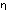

und die Zuordnung der Wahr- und Falschheit des ganzen Satzes und der Wahrheitskombinationen der Wahrheitsargumente durch Striche auf folgende Weise:
Dies Zeichen würde also z.B. den Satz
p  q darstellen. Nun will ich z.B. den
Satz ~(p . ~p) (Gesetz des Widerspruchs) daraufhin
untersuchen, ob er eine Tautologie ist. Die Form
"~
q darstellen. Nun will ich z.B. den
Satz ~(p . ~p) (Gesetz des Widerspruchs) daraufhin
untersuchen, ob er eine Tautologie ist. Die Form
"~ " wird in unserer Notation
" wird in unserer Notation
geschrieben; die Form "
. " so:

Daher lautet der Satz ~(p . ~q) so:

Setzen wir hier statt "q" "p" ein und untersuchen die Verbindung der äußersten W und F mit den innersten, so ergibt sich, daß die Wahrheit des ganzen Satzes allen Wahrheitskombinationen seines Argumentes, seine Falschheit keiner der Wahrheitskombinationen zugeordnet ist.